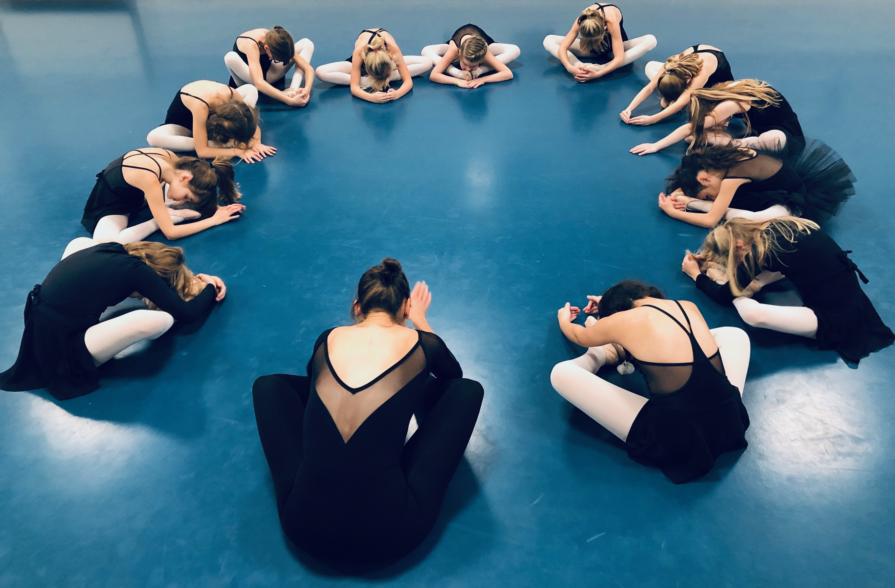
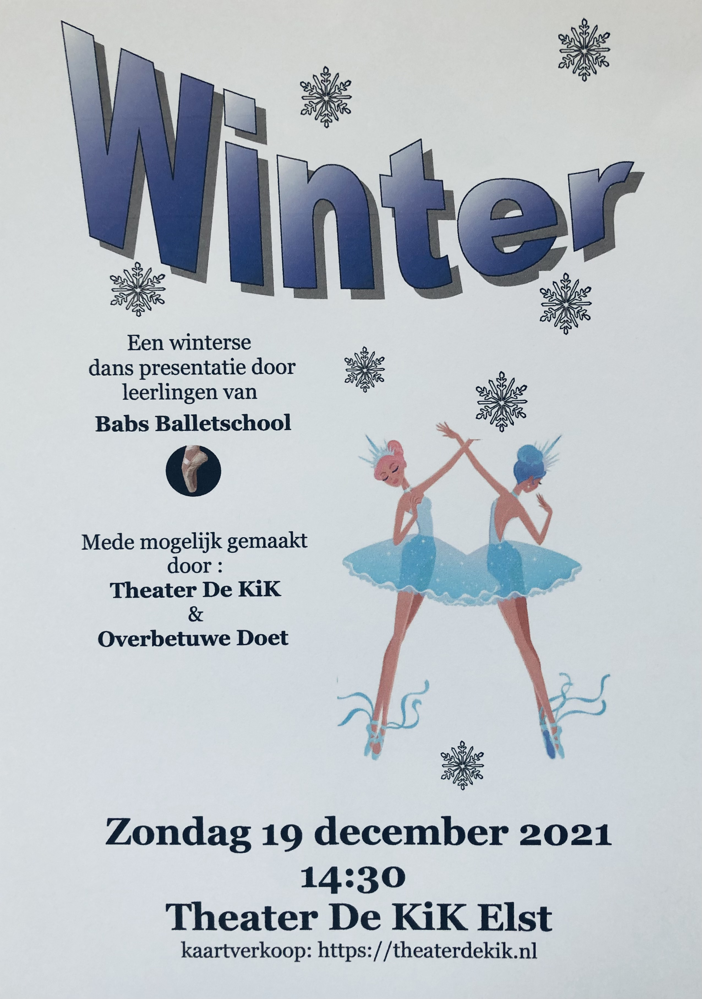

Seizoen '21/'22
 De lessen zijn weer gestart maar instromen is zeker nog mogelijk.
De lessen zijn weer gestart maar instromen is zeker nog mogelijk.
Vraag een gratis proefles aan via babs@babsballetschool.nl
Nieuwsbrief
 Nieuwsbrief 1 is op 11 okt. per mail naar iedereen verstuurd. Heeft u deze niet of niet goed ontvangen?
vraag hem aan via babs@babsballetschool.nl
Nieuwsbrief 1 is op 11 okt. per mail naar iedereen verstuurd. Heeft u deze niet of niet goed ontvangen?
vraag hem aan via babs@babsballetschool.nl
Korte Cursus Pilates
 Doe ook mee met de nieuwe cursus. Instromen kan nog!
Doe ook mee met de nieuwe cursus. Instromen kan nog!
Maandag :10:45 Pilates les voor volwassenen
Kijk lessen
 8 t/m 12 november zijn familie en vrienden van harte welkom om naar de les te komen kijken. i.v.m. de corona vragen wij 1 persoon publiek per leerling.
Winter
 op 19 december 14:30 zullen een aantal leerlingen optreden tijdens onze winterse presentatie. Deze presentatie is mede mogelijk gemaakt door de Overbetuwe Doet actie en Theater De KiK. Voor kaartjes of een V-ticket ga je naar: https://theaterdekik.nl/agenda-voorstellingen/
Corona Virus
 Vanaf 25 september hoeven we geen 1,5 meter afstand meer te houden maar we houden het virus wel graag weg uit de studio, blijf dus a.u.b.thuis als je klachten hebt.
Vanaf 25 september hoeven we geen 1,5 meter afstand meer te houden maar we houden het virus wel graag weg uit de studio, blijf dus a.u.b.thuis als je klachten hebt.
We hanteren de Corona maatregelen, ook bij ons moet iedereen van 18 jaar en ouder bij binnenkomst een QR coronacheck tonen. Wij zorgen voor ventilatie, een gedesinfecteerde barre, en desinfecterende handgel.
Zo houden we het samen gezond en gezellig.
Bedankt en tot dans!
Ballet Spelletje Balletris
 Typ deze code in op je toetsenbord: ⬆⬆⬇⬇⬅➡⬅➡ ba
Typ deze code in op je toetsenbord: ⬆⬆⬇⬇⬅➡⬅➡ ba